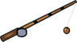

Feather
Obtaining
- Bought from Ratmas the Fisher for 3 gold
- Bought from Ranch Master Tobin for 3 gold
- Bought from Fisher Lena for 3 gold
- Bought from Merchant Ilsa for 3 gold
- Dropped by Imp (20% a kill)
- Dropped by Dragon Hatchling (30% a kill)
- Dropped by Dark Fairy (50% a kill)
- Dropped by Gryphon (90% a kill)
- Dropped by Gryphon (60% a kill)
- Dropped by Snow Owl (80% a kill)
- Dropped by Sea Eagle (90% a kill)
- Dropped by Sea Eagle (50% a kill)
- Dropped by Vulture (90% a kill)
- Dropped by Vulture (40% a kill)
- Dropped by Goose (70% a kill)
- Produced by a ranch Gryphon
- Produced by a ranch Dark Fairy
- Produced by a ranch Snow Owl
- Produced by a ranch Sea Eagle
- Produced by a ranch Vulture
Used to make
| Item | Skill | Needs | Where |
|---|---|---|---|
| Fletching 1 | 1 × | Fletching Bench | |
| Fletching 15 | 1 × | Fletching Bench | |
| Fletching 20 | 1 × | Fletching Bench | |
| Fletching 30 | 1 × | Fletching Bench | |
| Fletching 35 | 1 × | Fletching Bench | |
 Fly Rod ×1 | Fletching 20 | 2 × Birch Logs, 2 × | Fletching Bench |
| Fletching 50 | 1 × | Fletching Bench |